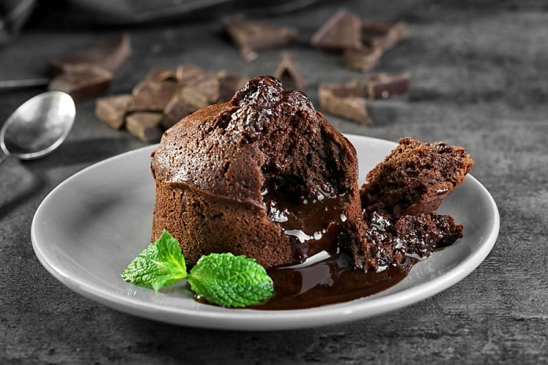

My 3 Favourite Pecipes
Chocolate Fondant

A Chocolate Fondant is a dessert which is cake-like around the edges, but with a soft and oozy centre, hence why it is sometimes called a Lava Cake or Molten Chocolate Cake. If you love warm and cosy desserts, you will love this recipe.
Ingredients:
- 50g melted butter
- cocoa powder
- 200g good-quality dark chocolate
- 200g butter
- 200g golden caster sugar
- 4 eggs
- 200g plain flour
- vanilla
Steps:
- First get your moulds ready. Using upward strokes, heavily brush melted butter (use 50g in total) all over the inside of the pudding mould. Place the mould in the fridge or freezer. Brush more melted butter over the chilled butter, then add a good spoonful of cocoa powder into the mould. Tip the mould so the powder completely coats the butter. Tap any excess cocoa back into the jar, then repeat with the next mould.
- Place a bowl over a pan of barely simmering water, then slowly melt 200g good-quality dark chocolate and 200g butter, both chopped into small pieces, together. Remove the bowl from the heat and stir until smooth. Leave to cool for about 10 mins.
- In a separate bowl whisk 4 eggs and 4 egg yolks together with 200g golden caster sugar until thick and pale and the whisk leaves a trail; use an electric whisk if you want. Sift 200g plain flour into the eggs, then beat together.
- Pour the melted chocolate into the egg mixture in thirds, beating well between each addition, until all the chocolate is added and the mixture is completely combined to a loose cake batter.
- Tip the fondant batter into a jug, then evenly divide between the moulds. The fondants can now be frozen for up to a month and cooked from frozen. Chill for at least 20 mins or up to the night before. To bake from frozen, simply carry on as stated, adding 5 mins more to the cooking time.
- Heat oven to 200C/fan 180C/gas 6. Place the fondants on a baking tray, then cook for 10-12 mins until the tops have formed a crust and they are starting to come away from the sides of their moulds. Remove from the oven, then leave to sit for 1 min before turning out.
- Loosen the fondants by moving the tops very gently so they come away from the sides, easing them out of the moulds. Tip each fondant slightly onto your hand so you know it has come away, then tip back into the mould ready to plate up.
- Starting from the middle of each plate, squeeze a spiral of caramel sauce – do all the plates you need before you go on to the next stage.
- Sit a fondant in the middle of each plate. Using a large spoon dipped in hot water, scoop a ‘quenelle’ of ice cream.
- Carefully place the ice cream on top of the fondant, then serve immediately. Repeat with the rest of the fondants.
Chicken nuggets

These are the best crispy baked chicken nuggets you’ll ever make! This delicious, healthy chicken nuggets recipe takes just about 30 minutes from start to finish and uses simple ingredients like panko breadcrumbs, chicken breast and spices. Serve with honey mustard, ketchup or your favorite BBQ sauce. Kid-friendly and adult approved!
Ingredients:
- vegetable oil for frying
- 4 cups all-purpose flour
- 6 tablespoons garlic salt
- 3 tablespoons ground black pepper
- 4 large eggs, beaten
- 8 skinless, boneless chicken breast halves - cut into small chunks
Steps:
- Gather all ingredients. Heat 1 inch oil in a large skillet or saucepan to 175 degrees C.
- Stir together flour, garlic salt, and pepper in a bowl. Dip chicken pieces into beaten eggs, then press each piece into flour mixture to coat well; shake off excess flour. Place coated chicken pieces onto a plate.
- Working in batches, fry chicken in hot oil until golden brown and no longer pink in the center.
- An instant-read thermometer inserted into the center should read at least 74 degrees C. Serve and enjoy!
Chicken Schnitzel

Golden and crispy outside, tender and juicy inside—chicken schnitzel is a weeknight favorite for kids and adults alike.
Ingredients:
- 2 large chicken breasts
- 1 tsp salt
- 1 tsp black pepper
- ½ cup (62.5 g) all-purpose flour
- 2 eggs
- 1 Tbsp water
- 1 tsp garlic powder
- 1 tsp dried parsley
- 1 ¼ cup (75 g) Panko breadcrumbs
- ½ cup (50 g) Parmesan cheese
- 2 cups (473.18 ml) vegetable oil
- 1 lemon
Steps:
- Gather and prepare all ingredients.
- Take each chicken breast and cut it evenly down the middle, lengthwise. Place each cutlet into a ziplock bag or between two sheets of plastic wrap. Then, with a meat tenderizer mallet or rolling pin, gently pound each piece to ¼-inch thickness. Season them with ½ teaspoon of salt and ½ teaspoon of black pepper and set them aside.
- Grab 3 medium bowls or shallow dishes. In the first bowl, combine the flour, ½ teaspoon salt, and ½ teaspoon of black pepper. In the second bowl, whisk together the egg, water, garlic powder, and parsley. In the third bowl, mix the panko and grated Parmesan.
- To bread the chicken, coat each piece in flour, shake off any excess, and transfer it to the egg bowl. Coat it in the egg wash, letting any extra drip off, then transfer to the panko. Coat it in panko, pressing it to ensure the chicken is fully covered. Then place all the breaded chicken onto a sheet pan.
- Once all the chicken has been breaded, heat the oil in a skillet to 350°F-375°F over medium heat. Once the oil is hot, carefully place one piece of breaded chicken into the oil. Do not overcrowd the skillet, and work in batches.
- Fry the chicken undisturbed for 3-4 minutes, until golden brown. Using tongs, gently flip and continue cooking for 2-3 minutes, until the internal temperature reaches 165°F.
- Once the chicken is done, place it on paper towels to drain. Make sure to maintain the oil temperature at 350°F and continue frying until all the pieces are done cooking. Serve with a squeeze of fresh lemon and enjoy.
Back